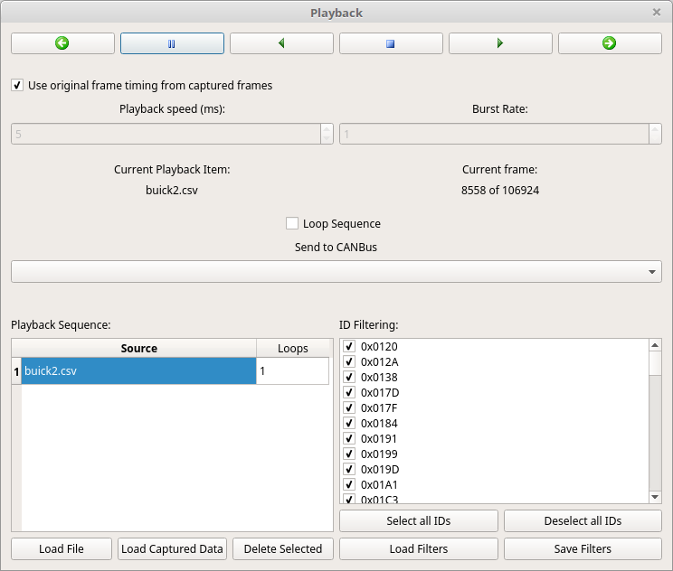

70. Playback Window
.
71. Preparing Frames for Playback
The first order of business is to load some CAN frames that you’d like to play back onto a CAN bus. In the lower left is a section titled “Playback Sequence”. It is so named because this playback interface can play a chain of different CAN captures very configurably. It consists of a list of captures to playback along with how many times to play each sequence item. For instance, you could play a file twice then go to the next, then play a third one four times. A playback item can either come from a file (Load File) or from the current list of captured frames on the main window (Load Captured Data). If you load the currently captured frames it truly means “currently”. That is, if more traffic comes in it will not play that new traffic back. A snapshot is taken at the time you push the button. Each sequence item has its own list of ID filters. In this way you can send only some of the frame IDs from the capture and this list can be different for each file or capture you load. The list of ID filters can be saved and loaded to make the process faster in the future.
Once you’ve set up a sequence of frames to playback you can also decide whether you’d like to loop that sequence forever or not. Up above the Playback Sequence and ID Filtering sections is the “Loop Sequence” checkbox.
72. Playing Back Frames
The playback window can send frames on a specific bus, all buses (be careful with that!) or “From File.” Some file formats store which bus each frame came in on. Also, the main window stores that info. So, captures that stored the bus properly could be used to send frames out multiple buses always to the proper bus for the frame in question. But, if you load a capture without this info it will default to bus 0 so bear that in mind.
The next order of business is frame timing. There are two approaches possible here. If you click “Use original frame timing from captured frames” then frames will be sent out in approximately the same timing as they came in with. The word approximately is used because it is difficult to get 1ms timing precision on a desktop OS. Frames that come in rapidly might have a 2-3ms jitter. In practice this is almost always irrelevant. This setting is suitable for nearly all uses.
Alternatively, it is also possible to send on a set schedule. With the “Use original” checkbox not checked you can set a playback speed in milliseconds and a burst rate. Burst means that it’ll send that many frames every tick. So, if you have a burst of 5 and a timing of 10ms then every 10ms 5 frames will be sent. This mode can provide for a predictable number of frames per second and could be useful to test how quickly a device really requires traffic without faulting. But, it will potentially drastically alter the timing of frames compared to their timing when they were captured.
The top of the window has a series of 6 icons all in a row:
- White Left Arrow - Play the last frame (just one frame)
- Pause sign - Pause playback
- Green Left Arrow - Play frames backward
- Blue Stop Button - Stop playback and return to the first frame in the first capture in the sequence
- Green Right Arrow - Play frames forward
- White Right Arrow - Play the next frame (just one frame)
73. Playback Status
Below the number spinners for Playback Speed and Burst Rate is text that displays the currently playing sequence item along with the current frame within that capture.